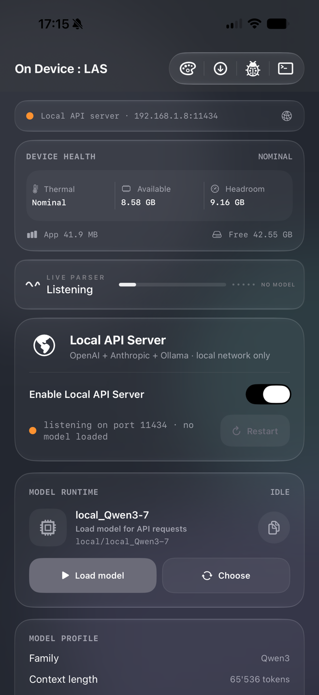
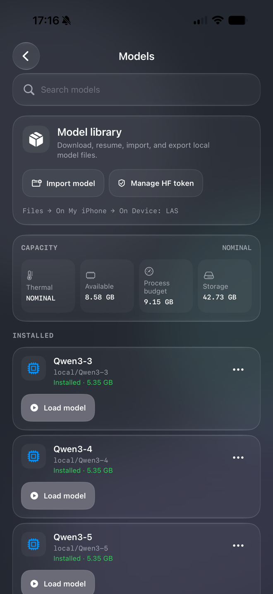
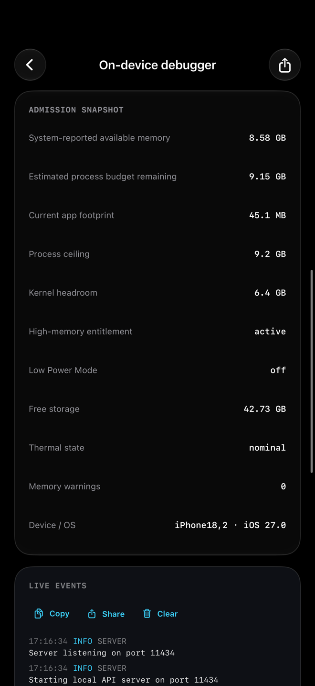
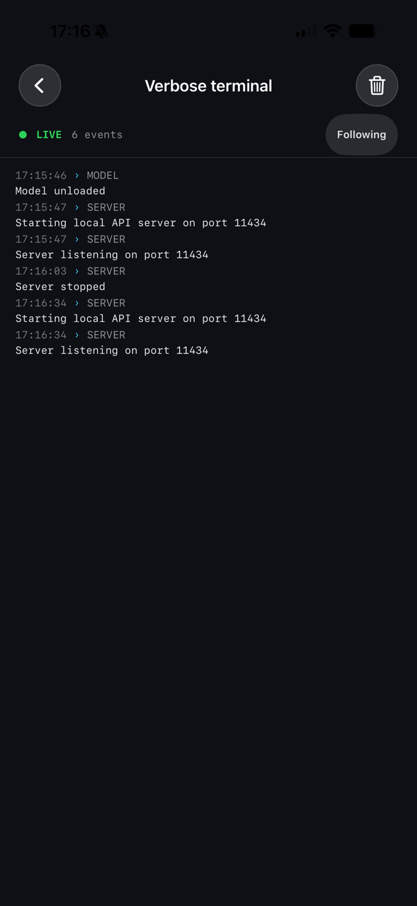

On Device: LAS turns a phone into a local inference endpoint. Point aider, Continue, or anything that speaks the OpenAI API at it and the tokens come off the device in your pocket — no account, no cloud round trip, no telemetry.
On Device: LAS is the server-only build of the local runtime. It keeps model loading, memory and thermal safety, authentication, and the API compatibility layer — and drops the assistant, lens, voice, and share-extension surfaces entirely. The app's job is to hold a model resident and answer HTTP.
OpenAI, Anthropic Messages, and Ollama routes are served from the same port. Clients connect with the SDK they already use.
SSE frames are written and flushed per token, so a client paints text as the model decodes it rather than waiting for the generation to finish.
Chain-of-thought streams as reasoning_content while content
carries only the final answer. Split markers across token boundaries are handled.
Provider-native shapes with preserved call IDs, structured arguments, and parallel calls. On MLX, decoding is grammar-constrained rather than prompt-hoped.
Load an MLX model or import a GGUF for the llama.cpp runtime. The repository ships no weights — you bring the model.
Bearer-authenticated HTTP intended for a trusted LAN. The listener stops when iOS backgrounds the app. Nothing leaves the device.
The server build is a control surface, not a chat app — a homepage that holds a model resident and answers HTTP, with runtime state, memory admission, and logs in view.




Compatibility is intentionally scoped. Options the local runtime does not implement are ignored where that is safe and rejected explicitly where it is not — the server does not pretend to support what it cannot do.
aider · Continue · openai-python
anthropic-sdk · Messages API
Ollama-native clients
Agent clients like aider drive long tool-calling conversations, and that is the demanding case — not chat. A model has to carry a real 65,536-token context and a KV cache to match before the server will treat it as agent-ready; below that the app shows a Hermes-compatibility warning rather than failing mid-session.
| Model family | Context | Tool parser | Parallel calls | Max output | KV cache |
|---|---|---|---|---|---|
| Qwen3 needs YaRN ×2 |
65,536 | hermes | 2 | 4,096 | 1.1–4.3 GB |
| Qwen3.5 | 65,536 | qwen3_coder | 2 | 4,096 | ~1.1 GB |
| Ornith | 65,536 | qwen3_xml | 2 | 4,096 | ~1.1 GB |
| Bonsai not agent-ready |
≤ 32,768 | qwen3_coder | 1 | 2,048 | ≤ 0.5 GB |
| Other / imported no tool support |
catalog | none | 1 | ≤ 4,096 | varies |
Qwen3 is natively 32K. Reaching a real 65,536-token runtime needs a YaRN factor of 2, which the app applies to the model configuration before MLX decodes it — your original config is backed up, not overwritten.
A 64K cache is 1.1 GB on a small Qwen3 and about 4.3 GB on an 8B, on top of the weights. This is the reason the memory entitlements below are not optional.
Capped at 2 concurrent calls on the families that handle them reliably, and forced sequential elsewhere. The limit is also settable per install.
The app shows its LAN URL and bearer key on the server homepage. Rotate the key after installing, then point a client at it.
$ curl -s http://192.168.1.8:11434/v1/models \ -H "Authorization: Bearer $KEY" | jq .data[0].id
$ curl -N http://192.168.1.8:11434/v1/chat/completions \ -H "Authorization: Bearer $KEY" \ -H 'Content-Type: application/json' \ -d '{"model":"your-model-id","stream":true, "messages":[{"role":"user","content":"Explain SSE in one line."}]}'
$ export OPENAI_API_BASE=http://192.168.1.8:11434/v1 $ export OPENAI_API_KEY=<key from the app> $ aider --model openai/your-model-id
Install the release IPA with AltStore / AltServer, SideStore, or ForgeSign if you would rather re-sign on the device itself. TrollStore is not a general option any more — it only covers a narrow range of older iOS versions.
The IPA is ad-hoc signed and declares two memory entitlements. Any of these tools re-signs it with your own certificate, so check the entitlements survive that step — without them iOS caps the process well below what a useful model needs, and larger models are killed on load rather than degrading.
| Entitlement | Why it is there |
|---|---|
| com.apple.developer.kernel.increased-memory-limit | Raises the per-process memory cap so multi-billion-parameter weights stay resident. |
| com.apple.developer.kernel.extended-virtual-addressing | Allows the large virtual address reservations the MLX and llama.cpp allocators make. |
The bundle identifier is com.mesutcydev.ondevicelas, separate from the source
app, so both can be installed side by side. The repository contains no model weights —
load or import a model on the device, then make it resident from the server homepage.
Bearer-authenticated plain HTTP. It is designed for a network you control, not for exposure to the internet. Do not port-forward it.
The listener stops when iOS backgrounds the app. A request that arrives before a model is resident gets a service-unavailable response, not a hang.
The server returns tool calls; it does not run them. Executing a call is always the client's decision.